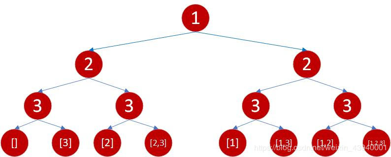

例题：有数组[1, 2, 3]，其元素数量n = 3，将那么其子集为
1 | [ |
可以用一共三个方法来求出所有子集，以这题作为参考
使用二叉树来构建含有子集的叶子节点，然后使用中序遍历
思路
每一层代表一个元素，左子树代表不使用该节点，右子树代表使用该节点，使用中序遍历来获得全部叶子结点，那么就能获得该数组的子集。
思路图

1 | private void getArr(List<Integer> list, List<List<Integer>> result, List<Integer> temp, int level) |
使用本质递归法递归遍历
思路
因为这个可以划分出比原问题规模小却同质的问题，那么是可以用递归解决的
1 | private List<List<Integer>> getArr(List<Integer> list, List<List<Integer>> result, int index) |
使用二进制组合遍历
思路
这个最简单，这题有3个元素，假设这三个元素设为连续的二进制数，1代表选取，0代表不选取，从000 - 111一共有八种情况，也是子集的数量。
1 | private void getArr(List<Integer> list, List<List<Integer>> result) |